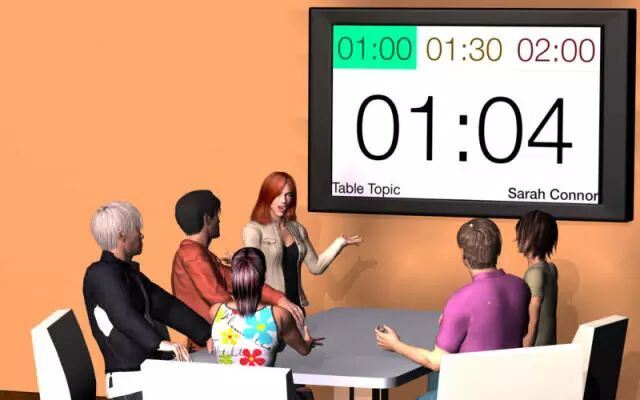
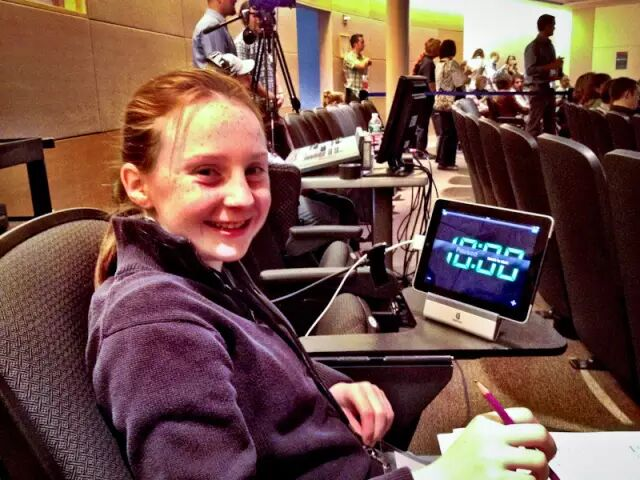

关键词：Timer是干嘛的

Timer是控制整场会议时间的角色，虽然看似简单，但是会议需要一名勇敢的时间官，勇于按铃把超时的角色人请到台下。他的基本任务是提示、提醒并点评整场会议是否按照议程上的时间安排进行，如演讲人是否充分利用规定的演讲时间进行演讲，并在规定时间内结束演讲。
关键词：Timer会议前准备
（1）检查。检查秒表、指示牌和钟是否准备就绪。
（2）角色说明。准备一个简短的角色说明。介绍总点评官在会议中的职能。准如果是第一次做时间官，可以与Mentor核对确认角色说明，并可做事先排练。
（3）规则介绍。
【备稿演讲】剩2分钟举绿牌（合格）；剩1分钟举黄牌；时间到达上限举红牌，并按铃。宽限30秒。
【即兴演讲】剩1分钟举绿牌（合格）；剩30秒举黄牌；时间到达上限举红牌，并按铃。宽限30秒。如果是double talk环节，讨论时间和总的时间也是双倍的哦，讨论时间为40s，总时间为4min。
关键词：Timer会议中的介绍流程

第1步：对整个会议的每个部分进行计时。
第2步：在被总点评邀请上台介绍时，引出简短的角色说明，并可适当建议各位演讲人如何在演讲过程中控制演讲时间。自己上台时，可以请坐在身边的人帮助你计时。
第3步：在总评阶段，由总点评官邀请上台，给出详细点评报告，在汇报角色人时间使用情况时可以归下类，比如最常规的3类：没有充分使用指定时间的/时间控制较好的/超时严重的。
考虑到报告时间紧张，具体偏差多少时间建议只选取几个偏差严重的报告一下时间，并且鼓励时间控制较好的speaker再接再厉。

看了我们的介绍有没有对Timer的职责和工作流程清晰起来呢？欢迎大家来北航头马俱乐部体验一下时间官哦！同时，欢迎加入我们北航Toastmaster俱乐部成为我们的会员哦！成为我们的会员要满足3+2+1的要求，即：参加3次例会；完成2次即兴演讲；申请并做1次入会演讲（1-2分钟自我介绍+2分钟问答）。会员投票通过后，即可办理入会手续，具体可以咨询我们的VPM。
我们的时间是每周五晚19:30-21:30（联合会议除外），地点是北航新主楼某教室，我们和你不见不散哦～

https://mp.weixin.qq.com/s/NTsDpudMqQn-kP6uSvFacg
本页为抢救式本地归档，图文已永久保存。